# 模型训练
import numpy as np
import pandas as pd
import os
import tqdm
import datetime
import time
base_path = 'data'
market_map = {'主板':0, '中小板':1}
exchange_map = {'SZSE':0, 'SSE':1}
is_hs_map = {'S':0, 'N':1, 'H':2}
area_map = {'深圳': 0, '北京': 1, '吉林': 2, '江苏': 3, '辽宁': 4, '广东': 5, '安徽': 6, '四川': 7, '浙江': 8,
'湖南': 9, '河北': 10, '新疆': 11, '山东': 12, '河南': 13, '山西': 14, '江西': 15, '青海': 16,
'湖北': 17, '内蒙': 18, '海南': 19, '重庆': 20, '陕西': 21, '福建': 22, '广西': 23, '天津': 24,
'云南': 25, '贵州': 26, '甘肃': 27, '宁夏': 28, '黑龙江': 29, '上海': 30, '西藏': 31}
industry_map = {'银行': 0, '全国地产': 1, '生物制药': 2, '环境保护': 3, '区域地产': 4, '酒店餐饮': 5, '运输设备': 6,
'综合类': 7, '建筑工程': 8, '玻璃': 9, '家用电器': 10, '文教休闲': 11, '其他商业': 12, '元器件': 13,
'IT设备': 14, '其他建材': 15, '汽车服务': 16, '火力发电': 17, '医药商业': 18, '汽车配件': 19, '广告包装': 20,
'轻工机械': 21, '新型电力': 22, '饲料': 23, '电气设备': 24, '房产服务': 25, '石油加工': 26, '铅锌': 27, '农业综合': 28,
'批发业': 29, '通信设备': 30, '旅游景点': 31, '港口': 32, '机场': 33, '石油贸易': 34, '空运': 35, '医疗保健': 36,
'商贸代理': 37, '化学制药': 38, '影视音像': 39, '工程机械': 40, '软件服务': 41, '证券': 42, '化纤': 43, '水泥': 44,
'专用机械': 45, '供气供热': 46, '农药化肥': 47, '机床制造': 48, '多元金融': 49, '百货': 50, '中成药': 51, '路桥': 52,
'造纸': 53, '食品': 54, '黄金': 55, '化工原料': 56, '矿物制品': 57, '水运': 58, '日用化工': 59, '机械基件': 60,
'汽车整车': 61, '煤炭开采': 62, '铁路': 63, '染料涂料': 64, '白酒': 65, '林业': 66, '水务': 67, '水力发电': 68,
'互联网': 69, '旅游服务': 70, '纺织': 71, '铝': 72, '保险': 73, '园区开发': 74, '小金属': 75, '铜': 76, '普钢': 77,
'航空': 78, '特种钢': 79, '种植业': 80, '出版业': 81, '焦炭加工': 82, '啤酒': 83, '公路': 84, '超市连锁': 85,
'钢加工': 86, '渔业': 87, '农用机械': 88, '软饮料': 89, '化工机械': 90, '塑料': 91, '红黄酒': 92, '橡胶': 93, '家居用品': 94,
'摩托车': 95, '电器仪表': 96, '服饰': 97, '仓储物流': 98, '纺织机械': 99, '电器连锁': 100, '装修装饰': 101, '半导体': 102,
'电信运营': 103, '石油开采': 104, '乳制品': 105, '商品城': 106, '公共交通': 107, '船舶': 108, '陶瓷': 109}
# load data
def JudgeST(x):
if 'ST' in x:
return 1
else:
return 0
def GetMA(df, col_name, rolling_day):
tmp_array = df[col_name].values.reshape(-1)
df.loc[ rolling_day:, col_name + '_'+str(rolling_day)] = (tmp_array[0:-rolling_day] -
tmp_array[rolling_day:]) / tmp_array[0:-rolling_day]
return df
col = ['ma'+str(i) for i in [5, 10, 13]] + ['ma_v_'+str(i) for i in [5, 10, 13]]
company_info = pd.read_csv(os.path.join(base_path, 'company_info.csv'), encoding='gbk')
company_info['is_ST'] = company_info['name'].apply(JudgeST)
# 丢弃一些多余的信息
company_info.drop(['index', 'symbol', 'fullname'], axis=1, inplace=True)
company_info.dropna(inplace=True)
company_info['market'] = company_info['market'].map(market_map)
company_info['exchange'] = company_info['exchange'].map(exchange_map)
company_info['is_hs'] = company_info['is_hs'].map(is_hs_map)
# 读取指数信息
stock_index_info = pd.DataFrame()
index = ['000001.SH', '000016.SH', '000002.SH', '399001.SZ', '399007.SZ', '399008.SZ', '399101.SZ',
'399102.SZ']
for ts_code in index:
tmp_df = pd.read_csv(os.path.join(base_path, 'OldData', ts_code + '_NormalData.csv'))
# 特征工程
# tmp_df = FeatureEngineering(tmp_df)
stock_index_info = pd.concat((stock_index_info, tmp_df))
break
# transaction_day = len(tmp_df)
tmp_list = list(tmp_df['trade_date'].sort_values())
date_map = dict(zip(tmp_list, range(len(tmp_list))))
# 读取股票交易信息
stock_info = pd.DataFrame()
remove_stock = []
tmp_list = []
for ts_code in tqdm.tqdm(company_info['ts_code']):
try:
tmp_df = pd.read_csv(os.path.join(base_path, 'OldData', ts_code + '_NormalData.csv'))
except:
pass
# 还需要去除一些停牌时间很久的企业，后期加
if len(tmp_df) < 100: # 去除一些上市不久的企业
remove_stock.append(ts_code)
continue
tmp_df = tmp_df.sort_values('trade_date', ascending=True).reset_index(drop=True)
for tmp_col in col:
for rolling_day in [3]:
tmp_df = GetMA(tmp_df, tmp_col, rolling_day)
tmp_list.append(tmp_df)
stock_info = pd.concat(tmp_list)
stock_info = stock_info.reset_index(drop=True)
ts_code_map = dict(zip(stock_info['ts_code'].unique(), range(stock_info['ts_code'].nunique())))
stock_info = stock_info.reset_index(drop=True)
stock_info['ts_code_id'] = stock_info['ts_code'].map(ts_code_map)
stock_info['trade_date_id'] = stock_info['trade_date'].map(date_map)
stock_info['ts_date_id'] = (10000 + stock_info['ts_code_id']) * 10000 + stock_info['trade_date_id']
stock_info = stock_info.merge(company_info, how='left', on='ts_code')
stock_info_copy = stock_info.copy()
100%|██████████| 2899/2899 [00:32<00:00, 88.97it/s]
# df total
stock_info = stock_info.drop_duplicates(subset=['ts_date_id'])
len(stock_info)
4349289
len(stock_info_copy)
特征工程#
feature_col = []
# 获取月份 和 星期几
def get_weekday(x):
x = str(x)
return datetime.datetime.fromtimestamp(time.mktime(time.strptime(x, "%Y%m%d"))).weekday()
# stock_info['month'] = stock_info['trade_date'].apply(lambda x: int(str(x)[4:6]))
stock_info['weekday'] = stock_info['trade_date'].apply(get_weekday)
# feature_col.append('month')
feature_col.append('weekday')
# 添加涨跌停信息
limit_info = pd.read_csv('limit.csv')
limit_info.drop('file', axis=1, inplace=True)
limit_info['U-D'] = limit_info['U'] - limit_info['D']
limit_info = limit_info.rename(columns={'date':'trade_date'})
stock_info = stock_info.merge(limit_info[['U-D', 'trade_date']], on='trade_date', how='left')
feature_col.append('U-D')
# 求相对的vol 这里与21均线比较
stock_info['vol'] = (stock_info['vol'] - stock_info['ma_v_21']) / stock_info['ma_v_21']
feature_col.append('vol')
#转换low colse等
col = ['open', 'high', 'low', 'high', 'pre_close']
for tmp_col in col:
stock_info[tmp_col+'_transform'] = (stock_info[tmp_col] - stock_info['ma5']) / stock_info['ma5']
feature_col.append(tmp_col+'_transform')
# 添加大盘指数信息
tmp_df = pd.read_csv(os.path.join(base_path, 'OldData', '000001.SH' + '_NormalData.csv'))
for tmp_col in ['amount', 'pre_close']:
tmp_df = tmp_df.rename(columns={tmp_col: tmp_col + '_index_000001'})
stock_info = stock_info.merge(tmp_df[['trade_date', tmp_col + '_index_000001']], on='trade_date', how='left')
for tmp_col in ['amount_index_000001', 'pre_close_index_000001', 'amount', 'pre_close']:
print(tmp_col)
for i in range(3):
tmp_df = stock_info[['ts_date_id', tmp_col]]
new_col_name = tmp_col + '_shift_{}'.format(i+1)
tmp_df = tmp_df.rename(columns={tmp_col:new_col_name})
feature_col.append(new_col_name)
tmp_df['ts_date_id'] = tmp_df['ts_date_id'] + i + 1
stock_info = stock_info.merge(tmp_df, how='left', on='ts_date_id')
for i in range(3):
new_col_name = tmp_col + '_shift_{}'.format(i+1)
stock_info[new_col_name] = (stock_info[tmp_col] - stock_info[new_col_name]) / stock_info[new_col_name]
# feature_col.append(new_col_name)
amount_index_000001
pre_close_index_000001
amount
pre_close
# 添加资金流向
df_list = []
col = ['buy_md_vol', 'sell_md_vol', 'buy_lg_vol', 'sell_lg_vol',
'buy_elg_vol', 'sell_elg_vol', 'net_mf_vol'] #'buy_sm_vol', 'sell_sm_vol',
for ts_code in tqdm.tqdm(company_info['ts_code']):
try:
tmp_df = pd.read_csv(os.path.join(base_path, 'MoneyData', ts_code + '.csv'))
except:
pass
transform_col = []
# 还需要去除一些停牌时间很久的企业，后期加
if len(tmp_df) < 100: # 去除一些上市不久的企业
remove_stock.append(ts_code)
continue
tmp_df = tmp_df.sort_values('trade_date', ascending=True).reset_index(drop=True)
drop_col = []
# tmp_df.drop(['buy_sm_amount', 'sell_sm_amount', 'buy_md_amount', 'sell_md_amount', 'buy_lg_amount', 'sell_lg_amount',
# 'buy_elg_amount', 'sell_elg_amount', 'net_mf_amount'])
tmp_df['diff_md'] = tmp_df['buy_md_vol'] - tmp_df['sell_md_vol']
tmp_df['diff_lg'] = tmp_df['buy_lg_vol'] - tmp_df['sell_lg_vol']
tmp_df['diff_elg'] = tmp_df['buy_elg_vol'] - tmp_df['sell_elg_vol']
rolling_day = 5
for tmp_col in ['buy_md_vol', 'buy_lg_vol', 'buy_elg_vol', 'diff_md', 'diff_lg', 'diff_elg']:
tmp_df[tmp_col+'_'+str(rolling_day)] = tmp_df[tmp_col].rolling(rolling_day).mean()
tmp_df[tmp_col+'_transform'] = (tmp_df[tmp_col] - tmp_df[tmp_col+'_'+str(rolling_day)]) / tmp_df[tmp_col+'_'+str(rolling_day)]
transform_col.append(tmp_col+'_transform')
transfom_col = ['buy_md_vol', 'buy_lg_vol', 'buy_elg_vol', 'diff_md', 'diff_lg', 'diff_elg']
for shift_day in [1, 2, 3]:
for tmp_col in ['buy_md_vol', 'buy_lg_vol', 'buy_elg_vol', 'diff_md', 'diff_lg', 'diff_elg']:
tmp_array = tmp_df[tmp_col].values.reshape(-1)
tmp_df.loc[shift_day:, tmp_col + '_shift_'+str(shift_day)] = tmp_array[0:-shift_day]
tmp_df[tmp_col + '_shift_'+str(shift_day)] = \
(tmp_df[tmp_col + '_shift_'+str(shift_day)] - tmp_df[tmp_col+'_'+str(rolling_day)]) / tmp_df[tmp_col+'_'+str(rolling_day)]
transform_col.append(tmp_col + '_shift_'+str(shift_day))
df_list.append(tmp_df[['trade_date', 'ts_code']+transform_col])
df_all = pd.concat(df_list)
100%|██████████| 2892/2892 [02:53<00:00, 18.26it/s]
feature_col = feature_col + [tmp_col for tmp_col in df_all.columns if tmp_col not in['trade_date', 'ts_code']]
stock_info = stock_info.merge(df_all, on=['trade_date', 'ts_code'], how='left')
feature_col.append('turnover_rate')
stock_info.columns
Index(['trade_date', 'ts_code', 'open', 'high', 'low', 'close', 'pre_close',
'change', 'pct_chg', 'vol', 'amount', 'turnover_rate', 'volume_ratio',
'ma5', 'ma_v_5', 'ma10', 'ma_v_10', 'ma13', 'ma_v_13', 'ma21',
'ma_v_21', 'ma30', 'ma_v_30', 'ma60', 'ma_v_60', 'ma120', 'ma_v_120',
'ma5_3', 'ma10_3', 'ma13_3', 'ma_v_5_3', 'ma_v_10_3', 'ma_v_13_3',
'ts_code_id', 'trade_date_id', 'ts_date_id', 'name', 'area', 'industry',
'market', 'exchange', 'list_date', 'is_hs', 'is_ST', 'weekday', 'U-D',
'open_transform', 'high_transform', 'low_transform',
'pre_close_transform', 'amount_index_000001', 'pre_close_index_000001',
'amount_index_000001_shift_1', 'amount_index_000001_shift_2',
'amount_index_000001_shift_3', 'pre_close_index_000001_shift_1',
'pre_close_index_000001_shift_2', 'pre_close_index_000001_shift_3',
'amount_shift_1', 'amount_shift_2', 'amount_shift_3',
'pre_close_shift_1', 'pre_close_shift_2', 'pre_close_shift_3',
'high_shift_1', 'low_shift_1', 'high_shift_2', 'low_shift_2',
'high_shift_3', 'low_shift_3', 'label_max', 'label_min', 'label_final'],
dtype='object')
标签制作#
# make_label
# stock_info = stock_info_copy.copy()
use_col = []
for i in range(3):
tmp_df = stock_info[['ts_date_id', 'high', 'low']]
tmp_df = tmp_df.rename(columns={'high':'high_shift_{}'.format(i+1), 'low':'low_shift_{}'.format(i+1)})
use_col.append('high_shift_{}'.format(i+1))
use_col.append('low_shift_{}'.format(i+1))
tmp_df['ts_date_id'] = tmp_df['ts_date_id'] - i - 1
stock_info = stock_info.merge(tmp_df, how='left', on='ts_date_id')
stock_info.dropna(inplace=True)
for i in range(3):
stock_info['high_shift_{}'.format(i+1)] = (stock_info['high_shift_{}'.format(i+1)] - stock_info['close']) / stock_info['close']
stock_info['low_shift_{}'.format(i+1)] = (stock_info['low_shift_{}'.format(i+1)] - stock_info['close']) / stock_info['close']
tmp_array = stock_info[use_col].values
max_increse = np.max(tmp_array, axis=1)
min_increse = np.min(tmp_array, axis=1)
stock_info['label_max'] = max_increse
stock_info['label_min'] = min_increse
stock_info['label_final'] = (stock_info['label_max'] > 0.06) & (stock_info['label_min'] > -0.03)
stock_info['label_final'] = stock_info['label_final'].apply(lambda x: int(x))
stock_info = stock_info.reset_index(drop=True)
# stock_info.drop('index', axis=1, inplace=True)
feature_col=['weekday', 'U-D', 'vol', 'open_transform', 'high_transform', 'low_transform', 'high_transform', 'pre_close_transform',
'amount_index_000001_shift_1', 'amount_index_000001_shift_2', 'amount_index_000001_shift_3', 'pre_close_index_000001_shift_1',
'pre_close_index_000001_shift_2', 'pre_close_index_000001_shift_3', 'amount_shift_1', 'amount_shift_2', 'amount_shift_3',
'pre_close_shift_1', 'pre_close_shift_2', 'pre_close_shift_3', 'turnover_rate', 'buy_md_vol_shift_1', 'buy_lg_vol_shift_1',
'buy_elg_vol_shift_1', 'diff_md_shift_1', 'diff_lg_shift_1', 'diff_elg_shift_1', 'buy_md_vol_shift_2', 'buy_lg_vol_shift_2',
'buy_elg_vol_shift_2', 'diff_md_shift_2', 'diff_lg_shift_2', 'diff_elg_shift_2']
# 'buy_md_vol_shift_1', 'buy_lg_vol_shift_1',
# 'buy_elg_vol_shift_1', 'diff_md_shift_1', 'diff_lg_shift_1', 'diff_elg_shift_1', 'buy_md_vol_shift_2', 'buy_lg_vol_shift_2',
# 'buy_elg_vol_shift_2', 'diff_md_shift_2', 'diff_lg_shift_2', 'diff_elg_shift_2', 'buy_md_vol_shift_3', 'buy_lg_vol_shift_3',
# 'buy_elg_vol_shift_3', 'diff_md_shift_3', 'diff_lg_shift_3', 'diff_elg_shift_3'
# 'buy_md_vol_transform', 'buy_lg_vol_transform',
# 'buy_elg_vol_transform', 'diff_md_transform', 'diff_lg_transform', 'diff_elg_transform',
print(feature_col)
['weekday', 'U-D', 'vol', 'open_transform', 'high_transform', 'low_transform', 'high_transform', 'pre_close_transform', 'amount_index_000001_shift_1', 'amount_index_000001_shift_2', 'amount_index_000001_shift_3', 'pre_close_index_000001_shift_1', 'pre_close_index_000001_shift_2', 'pre_close_index_000001_shift_3', 'amount_shift_1', 'amount_shift_2', 'amount_shift_3', 'pre_close_shift_1', 'pre_close_shift_2', 'pre_close_shift_3', 'turnover_rate', 'buy_md_vol_shift_1', 'buy_lg_vol_shift_1', 'buy_elg_vol_shift_1', 'diff_md_shift_1', 'diff_lg_shift_1', 'diff_elg_shift_1', 'buy_md_vol_shift_2', 'buy_lg_vol_shift_2', 'buy_elg_vol_shift_2', 'diff_md_shift_2', 'diff_lg_shift_2', 'diff_elg_shift_2']
模型训练#
trn_col = feature_col
# 'high', 'low', 'close', 'pre_close',
trn_col = list(set(trn_col))
label = 'label_final'
# trn_date_min = 20170103
# trn_date_max = 20190416
# val_date_min = 20190417
# val_date_max = 20190429
# test_date_min = 20190417
# test_date_max = 20191218
trn_date_min = 20170103
trn_date_max = 20190101
val_date_min = 20190101
val_date_max = 20190419
test_date_min = 20190101
test_date_max = 20191218
trn_data_idx = (stock_info['trade_date'] >= trn_date_min) & (stock_info['trade_date'] <= trn_date_max) & (stock_info['high']!=stock_info['close'])
val_data_idx = (stock_info['trade_date'] >= val_date_min) & (stock_info['trade_date'] <= val_date_max)
test_data_idx = (stock_info['trade_date'] >= test_date_min) & (stock_info['trade_date'] <= test_date_max)
trn = stock_info[trn_data_idx][trn_col]
trn_label = stock_info[trn_data_idx][label].values
val = stock_info[val_data_idx][trn_col]
val_label = stock_info[val_data_idx][label].values
test = stock_info[test_data_idx][trn_col]
test_label = stock_info[test_data_idx][label].values
print('rate of 0: %.4f, rate of 1: %.4f' % (np.sum(trn_label==0)/len(trn_label), np.sum(trn_label==1)/len(trn_label)))
print('trn data:%d, val data:%d, test data:%d' % (len(trn), len(val), len(test)))
print('number of features:%d' % len(trn_col))
rate of 0: 0.8942, rate of 1: 0.1058
trn data:1130149, val data:24710, test data:655822
number of features:32
def win_score_eval(preds, valid_df):
labels = valid_df.get_label()
preds = np.round(preds)
tp = np.sum((preds==1)&(labels==1))
pp = np.sum(preds==1)
scores = tp/(pp+0.001) + 2.5*tp - pp
# preds = np.argmax(preds.reshape(3, -1), axis=0)
# scores = f1_score(y_true=labels, y_pred=preds, average='macro')
return 'win', scores, True
# 模型训练及评价
import lightgbm as lgb
from sklearn import metrics
param = {'num_leaves': 31,
'min_data_in_leaf': 20,
'objective': 'binary',
'learning_rate': 0.06,
"boosting": "gbdt",
# "bagging_freq": 1,
# "bagging_seed": 11,
"metric": 'None',
"verbosity": -1}
trn_data = lgb.Dataset(trn, trn_label)
val_data = lgb.Dataset(val, val_label)
num_round =1000
# clf = lgb.train(param, trn_data, num_round, valid_sets=[trn_data, val_data], verbose_eval=100,
# early_stopping_rounds=300, feval=win_score_eval)
clf = lgb.train(param, trn_data, num_round, verbose_eval=300)
# oof_lgb = clf.predict(val, num_iteration=clf.best_iteration)
test_lgb = clf.predict(test, num_iteration=clf.best_iteration)
len(feature_col)
33
pd.DataFrame({
'column': trn_col,
'importance': clf.feature_importance(),
}).sort_values(by='importance', ascending=False)
| column | importance | |
|---|---|---|
| 8 | amount_index_000001_shift_1 | 1490 |
| 17 | pre_close_index_000001_shift_1 | 1419 |
| 21 | U-D | 1405 |
| 11 | amount_index_000001_shift_2 | 1381 |
| 13 | turnover_rate | 1321 |
| 19 | pre_close_index_000001_shift_3 | 1263 |
| 22 | pre_close_index_000001_shift_2 | 1235 |
| 24 | amount_index_000001_shift_3 | 1224 |
| 4 | high_transform | 1126 |
| 1 | low_transform | 1120 |
| 12 | vol | 1031 |
| 9 | buy_elg_vol_shift_1 | 903 |
| 31 | amount_shift_3 | 889 |
| 30 | pre_close_shift_1 | 878 |
| 16 | amount_shift_1 | 856 |
| 2 | pre_close_shift_3 | 843 |
| 7 | buy_lg_vol_shift_1 | 841 |
| 25 | buy_elg_vol_shift_2 | 799 |
| 10 | diff_lg_shift_2 | 782 |
| 15 | diff_elg_shift_2 | 772 |
| 5 | amount_shift_2 | 747 |
| 27 | diff_elg_shift_1 | 747 |
| 0 | diff_md_shift_1 | 747 |
| 6 | diff_lg_shift_1 | 741 |
| 3 | buy_md_vol_shift_1 | 734 |
| 29 | pre_close_shift_2 | 731 |
| 14 | buy_lg_vol_shift_2 | 721 |
| 20 | buy_md_vol_shift_2 | 720 |
| 28 | diff_md_shift_2 | 718 |
| 26 | open_transform | 698 |
| 23 | pre_close_transform | 675 |
| 18 | weekday | 443 |
模型评价#
# oof_lgb_final = np.round(oof_lgb)
# print(metrics.accuracy_score(val_label, oof_lgb_final))
# print(metrics.confusion_matrix(val_label, oof_lgb_final))
# tp = np.sum(((oof_lgb_final == 1) & (val_label == 1)))
# pp = np.sum(oof_lgb_final == 1)
# print('sensitivity:%.3f'% (tp/(pp)))
thresh_hold = 0.5
# oof_test_final = (test_lgb >= 0.69) & (test_lgb <=0.7)
oof_test_final = test_lgb >= thresh_hold
print(metrics.accuracy_score(test_label, oof_test_final))
print(metrics.confusion_matrix(test_label, oof_test_final))
tp = np.sum(((oof_test_final == 1) & (test_label == 1)))
pp = np.sum(oof_test_final == 1)
print('sensitivity:%.3f'% (tp/(pp)))
0.8496634757601911
[[557102 272]
[ 98322 126]]
sensitivity:0.317
test_postive_idx = np.argwhere(oof_test_final == 1).reshape(-1)
# test_postive_idx = list(range(len(oof_test_final)))
test_all_idx = np.argwhere(test_data_idx).reshape(-1)
# 查看选了哪些股票
tmp_col = ['ts_code', 'name', 'trade_date', 'open', 'high', 'low', 'close', 'pre_close',
'change', 'pct_chg', 'amount', 'is_ST', 'label_max', 'label_min', 'label_final']
# stock_info.iloc[test_all_idx[test_postive_idx]]
tmp_df = stock_info[tmp_col].iloc[test_all_idx[test_postive_idx]].reset_index()
tmp_df['label_prob'] = test_lgb[test_postive_idx]
# idx_tmp = tmp_df['is_ST'] == 0
# tmp_df.loc[idx_tmp, 'is_limit_up'] = (((tmp_df['close'][idx_tmp]-tmp_df['pre_close'][idx_tmp]) / tmp_df['pre_close'][idx_tmp]) > 0.095)
# idx_tmp = tmp_df['is_ST'] == 1
# tmp_df.loc[idx_tmp, 'is_limit_up'] = (((tmp_df['close'][idx_tmp]-tmp_df['pre_close'][idx_tmp]) / tmp_df['pre_close'][idx_tmp]) > 0.047)
tmp_df['is_limit_up'] = tmp_df['close'] == tmp_df['high']
buy_df = tmp_df[(tmp_df['is_limit_up']==False)].reset_index()
buy_df.drop(['index', 'level_0'], axis=1, inplace=True)
# print(len(buy_df), sum(buy_df['label_final']))
回测#
# stock_info.reset_index().head()
# 读取指数信息
index_df = pd.read_csv(os.path.join(base_path, 'OldData', '000001.SH' + '_NormalData.csv'))
tmp_idx = (index_df['trade_date'] >= test_date_min) & (index_df['trade_date'] <= test_date_max)
index_df = index_df.loc[tmp_idx].reset_index()
index_df.drop('index', axis=1, inplace=True)
tmp_idx = (index_df['trade_date'] == test_date_min+1)
close1 = index_df[tmp_idx]['close'].values[0]
tmp_idx = (index_df['trade_date'] == test_date_max)
close2 = index_df[tmp_idx]['close'].values[0]
from imp import reload
import Account
reload(Account)
money_init = 100000
account = Account.Account(money_init, max_hold_period=3)
account.BackTest(buy_df, stock_info_copy, index_df)
20190311 买入 德生科技 (002908.SZ) 1400股，股价：13.9418,花费：19518.52,手续费：5.86，剩余现金：80475.62
20190311 买入 粤传媒 (002181.SZ) 3200股，股价：6.1657,花费：19730.24,手续费：5.92，剩余现金：60739.47
20190311 买入 冀东装备 (000856.SZ) 1200股，股价：15.57,花费：18684.0,手续费：5.61，剩余现金：42049.86
20190311 买入 广电网络 (600831.SH) 2200股，股价：8.892999999999999,花费：19564.6,手续费：5.87，剩余现金：22479.39
20190311 买入 中光学 (002189.SZ) 900股，股价：21.766,花费：19589.4,手续费：5.88，剩余现金：2884.11
20190312 止盈卖出中光学 (002189.SZ) 900股，股价：22.8543,收入：20568.87,手续费：26.74，剩余现金：23426.24，最终盈利：946.85
20190312 止盈卖出广电网络 (600831.SH) 2200股，股价：9.33765,收入：20542.83,手续费：26.71，剩余现金：43942.37，最终盈利：945.65
20190312 止盈卖出冀东装备 (000856.SZ) 1200股，股价：16.3485,收入：19618.2,手续费：25.5，剩余现金：63535.07，最终盈利：903.09
20190312 止盈卖出粤传媒 (002181.SZ) 3200股，股价：6.473985000000001,收入：20716.75,手续费：26.93，剩余现金：84224.89，最终盈利：953.66
20190312 止盈卖出德生科技 (002908.SZ) 1400股，股价：14.6554,收入：20517.56,手续费：26.67，剩余现金：104715.77，最终盈利：966.51
20190318 买入 中国软件 (600536.SH) 400股，股价：47.2564,花费：18902.56,手续费：5.67，剩余现金：85807.54
20190318 买入 奥飞娱乐 (002292.SZ) 2400股，股价：8.46,花费：20304.0,手续费：6.09，剩余现金：65497.45
20190319 止盈卖出奥飞娱乐 (002292.SZ) 2400股，股价：8.883000000000001,收入：21319.2,手续费：27.71，剩余现金：86788.94，最终盈利：981.39
20190319 止损卖出中国软件 (600536.SH) 400股，股价：45.366144,收入：18146.46,手续费：23.59，剩余现金：104911.8，最终亏损：-785.36
20190327 买入 动力源 (600405.SH) 3700股，股价：5.67,花费：20979.0,手续费：6.29，剩余现金：83926.51
20190328 止损卖出动力源 (600405.SH) 3700股，股价：5.4432,收入：20139.84,手续费：26.18，剩余现金：104040.17，最终亏损：-871.64
20190329 买入 中铝国际 (601068.SH) 2800股，股价：7.4229,花费：20784.12,手续费：6.24，剩余现金：83249.81
20190329 买入 中国软件 (600536.SH) 300股，股价：55.4371,花费：16631.13,手续费：5，剩余现金：66613.68
20190329 买入 雄韬股份 (002733.SZ) 800股，股价：24.1631,花费：19330.48,手续费：5.8，剩余现金：47277.4
20190329 买入 沃尔核材 (002130.SZ) 3900股，股价：5.26,花费：20514.0,手续费：6.15，剩余现金：26757.25
20190329 买入 天津磁卡 (600800.SH) 2500股，股价：8.02,花费：20050.0,手续费：6.02，剩余现金：6701.23
20190329 买入 复旦复华 (600624.SH) 500股，股价：12.0533,花费：6026.65,手续费：5，剩余现金：669.58
20190401 止盈卖出沃尔核材 (002130.SZ) 3900股，股价：5.523,收入：21539.7,手续费：28.0，剩余现金：22181.28，最终盈利：991.54
20190401 止盈卖出雄韬股份 (002733.SZ) 800股，股价：25.371255,收入：20297.0,手续费：26.39，剩余现金：42451.9，最终盈利：934.34
20190401 止盈卖出中国软件 (600536.SH) 300股，股价：58.208955,收入：17462.69,手续费：22.7，剩余现金：59891.88，最终盈利：803.86
20190402 止盈卖出复旦复华 (600624.SH) 500股，股价：12.655965,收入：6327.98,手续费：11.33，剩余现金：66208.54，最终盈利：285.0
20190402 止盈卖出天津磁卡 (600800.SH) 2500股，股价：8.59,收入：21475.0,手续费：27.92，剩余现金：87655.62，最终盈利：1391.07
20190402 止盈卖出中铝国际 (601068.SH) 2800股，股价：7.794045000000001,收入：21823.33,手续费：28.37，剩余现金：109450.58，最终盈利：1004.6
20190418 买入 汇顶科技 (603160.SH) 100股，股价：132.4769,花费：13247.69,手续费：5，剩余现金：96197.89
20190419 止损卖出汇顶科技 (603160.SH) 100股，股价：127.177824,收入：12717.78,手续费：17.72，剩余现金：108897.95，最终亏损：-552.63
20190429 买入 招商银行 (600036.SH) 600股，股价：34.4016,花费：20640.96,手续费：6.19，剩余现金：88250.8
20190430 止损卖出招商银行 (600036.SH) 600股，股价：33.025536,收入：19815.32,手续费：25.76，剩余现金：108040.36，最终亏损：-857.59
20190510 买入 华茂股份 (000850.SZ) 4100股，股价：5.1967,花费：21306.47,手续费：6.39，剩余现金：86727.5
20190510 买入 东音股份 (002793.SZ) 2000股，股价：10.38,花费：20760.0,手续费：6.23，剩余现金：65961.27
20190510 买入 盈趣科技 (002925.SZ) 400股，股价：47.18,花费：18872.0,手续费：5.66，剩余现金：47083.61
20190510 买入 浙江富润 (600070.SH) 2400股，股价：8.9533,花费：21487.92,手续费：6.45，剩余现金：25589.24
20190510 买入 江苏舜天 (600287.SH) 2900股，股价：7.2829,花费：21120.41,手续费：6.34，剩余现金：4462.5
20190513 止盈卖出江苏舜天 (600287.SH) 2900股，股价：7.647045,收入：22176.43,手续费：28.83，剩余现金：26610.1，最终盈利：1020.86
20190513 止损卖出浙江富润 (600070.SH) 2400股，股价：8.595168000000001,收入：20628.4,手续费：26.82，剩余现金：47211.69，最终亏损：-892.78
20190513 止损卖出盈趣科技 (002925.SZ) 400股，股价：45.2928,收入：18117.12,手续费：23.55，剩余现金：65305.25，最终亏损：-784.09
20190513 止损卖出东音股份 (002793.SZ) 2000股，股价：9.9331,收入：19866.2,手续费：25.83，剩余现金：85145.63，最终亏损：-925.85
20190513 止盈卖出华茂股份 (000850.SZ) 4100股，股价：5.456535,收入：22371.79,手续费：29.08，剩余现金：107488.34，最终盈利：1029.85
20190522 买入 国际实业 (000159.SZ) 2300股，股价：9.062999999999999,花费：20844.9,手续费：6.25，剩余现金：86637.18
20190524 止损卖出国际实业 (000159.SZ) 2300股，股价：8.7542,收入：20134.66,手续费：26.18，剩余现金：106745.67，最终亏损：-742.67
20190528 买入 远望谷 (002161.SZ) 2600股，股价：7.93,花费：20618.0,手续费：6.19，剩余现金：86121.48
20190529 止盈卖出远望谷 (002161.SZ) 2600股，股价：8.3265,收入：21648.9,手续费：28.14，剩余现金：107742.24，最终盈利：996.57
20190611 买入 东方金钰 (600086.SH) 5900股，股价：3.64,花费：21476.0,手续费：6.44，剩余现金：86259.8
20190612 止盈卖出东方金钰 (600086.SH) 5900股，股价：3.8220000000000005,收入：22549.8,手续费：29.31，剩余现金：108780.28，最终盈利：1038.04
20190701 买入 华创阳安 (600155.SH) 1600股，股价：13.54,花费：21664.0,手续费：6.5，剩余现金：87109.78
20190703 到期卖出华创阳安 (600155.SH) 1600股，股价：13.5,收入：21600.0,手续费：28.08，剩余现金：108681.7，最终亏损：-98.58
20190806 买入 康强电子 (002119.SZ) 1500股，股价：14.08,花费：21120.0,手续费：6.34，剩余现金：87555.37
20190806 买入 山煤国际 (600546.SH) 3100股，股价：6.83,花费：21173.0,手续费：6.35，剩余现金：66376.01
20190806 买入 山东黄金 (600547.SH) 600股，股价：32.2102,花费：19326.12,手续费：5.8，剩余现金：47044.1
20190806 买入 中金黄金 (600489.SH) 2200股，股价：9.67,花费：21274.0,手续费：6.38，剩余现金：25763.71
20190806 买入 登海种业 (002041.SZ) 2400股，股价：8.78,花费：21072.0,手续费：6.32，剩余现金：4685.39
20190807 止盈卖出登海种业 (002041.SZ) 2400股，股价：9.219,收入：22125.6,手续费：28.76，剩余现金：26782.23，最终盈利：1018.52
20190807 止盈卖出中金黄金 (600489.SH) 2200股，股价：10.153500000000001,收入：22337.7,手续费：29.04，剩余现金：49090.89，最终盈利：1028.28
20190807 止盈卖出山东黄金 (600547.SH) 600股，股价：33.820710000000005,收入：20292.43,手续费：26.38，剩余现金：69356.94，最终盈利：934.13
20190807 止损卖出康强电子 (002119.SZ) 1500股，股价：13.5168,收入：20275.2,手续费：26.36，剩余现金：89605.78，最终亏损：-877.49
20190808 到期卖出山煤国际 (600546.SH) 3100股，股价：6.9,收入：21390.0,手续费：27.81，剩余现金：110967.97，最终盈利：182.84
20190809 买入 东山精密 (002384.SZ) 1200股，股价：17.3571,花费：20828.52,手续费：6.25，剩余现金：90133.2
20190809 买入 中欣氟材 (002915.SZ) 800股，股价：25.62,花费：20496.0,手续费：6.15，剩余现金：69631.05
20190809 买入 泰晶科技 (603738.SH) 1100股，股价：19.33,花费：21263.0,手续费：6.38，剩余现金：48361.68
20190809 买入 共达电声 (002655.SZ) 2500股，股价：8.84,花费：22100.0,手续费：6.63，剩余现金：26255.05
20190809 买入 唐人神 (002567.SZ) 1800股，股价：11.75,花费：21150.0,手续费：6.34，剩余现金：5098.7
20190809 买入 哈高科 (600095.SH) 600股，股价：7.54,花费：4524.0,手续费：5，剩余现金：569.7
20190812 止盈卖出哈高科 (600095.SH) 600股，股价：7.917000000000001,收入：4750.2,手续费：9.75，剩余现金：5310.15，最终盈利：211.45
20190812 止盈卖出共达电声 (002655.SZ) 2500股，股价：9.282,收入：23205.0,手续费：30.17，剩余现金：28484.98，最终盈利：1068.2
20190812 止盈卖出泰晶科技 (603738.SH) 1100股，股价：20.296499999999998,收入：22326.15,手续费：29.02，剩余现金：50782.11，最终盈利：1027.75
20190812 止盈卖出东山精密 (002384.SZ) 1200股，股价：18.224955,收入：21869.95,手续费：28.43，剩余现金：72623.63，最终盈利：1006.75
20190813 到期卖出唐人神 (002567.SZ) 1800股，股价：11.82,收入：21276.0,手续费：27.66，剩余现金：93871.97，最终盈利：92.0
20190813 止盈卖出中欣氟材 (002915.SZ) 800股，股价：27.12,收入：21696.0,手续费：28.2，剩余现金：115539.76，最终盈利：1165.65
20190827 买入 华映科技 (000536.SZ) 7500股，股价：3.06,花费：22950.0,手续费：6.88，剩余现金：92582.88
20190827 买入 中国长城 (000066.SZ) 2100股，股价：10.53,花费：22113.0,手续费：6.63，剩余现金：70463.24
20190827 买入 湘油泵 (603319.SH) 1400股，股价：16.13,花费：22582.0,手续费：6.77，剩余现金：47874.47
20190827 买入 海量数据 (603138.SH) 1300股，股价：16.55,花费：21515.0,手续费：6.45，剩余现金：26353.01
20190827 买入 德赛西威 (002920.SZ) 1000股，股价：23.06,花费：23060.0,手续费：6.92，剩余现金：3286.1
20190828 止损卖出中国长城 (000066.SZ) 2100股，股价：10.108799999999999,收入：21228.48,手续费：27.6，剩余现金：24486.98，最终亏损：-918.75
20190829 到期卖出德赛西威 (002920.SZ) 1000股，股价：22.76,收入：22760.0,手续费：29.59，剩余现金：47217.39，最终亏损：-336.51
20190829 到期卖出海量数据 (603138.SH) 1300股，股价：16.5,收入：21450.0,手续费：27.88，剩余现金：68639.51，最终亏损：-99.34
20190829 到期卖出湘油泵 (603319.SH) 1400股，股价：16.2,收入：22680.0,手续费：29.48，剩余现金：91290.02，最终盈利：61.74
20190829 止损卖出华映科技 (000536.SZ) 7500股，股价：2.9375999999999998,收入：22032.0,手续费：28.64，剩余现金：113293.38，最终亏损：-953.53
tmp_df2 = buy_df[['ts_code', 'trade_date', 'label_prob', 'label_final']]
tmp_df2 = tmp_df2.rename(columns={'trade_date':'buy_date'})
tmp_df = account.info
tmp_df = tmp_df.merge(tmp_df2, on=['ts_code', 'buy_date'], how='left')
account_profit = (account.market_value - money_init) / money_init
index_profit = (close2 - close1) / close1
win_rate = account.victory / (account.victory + account.defeat)
print('账户盈利情况:%.4f' % account_profit)
print('上证指数浮动情况:%.4f' % index_profit)
print('交易胜率:%.4f' % win_rate)
print('最大回撤率:%.4f' % account.max_retracement)
账户盈利情况:0.1329
上证指数浮动情况:0.2238
交易胜率:0.6585
最大回撤率:0.0248
import Draw
reload(Draw)
%matplotlib inline
index_value = list(index_df[index_df['trade_date']==test_date_min+1]['pre_close']) + list(index_df.sort_values('trade_date')['close'])
Draw.Draw_Market_Value_Change(0, account.market_value_all, index_value)
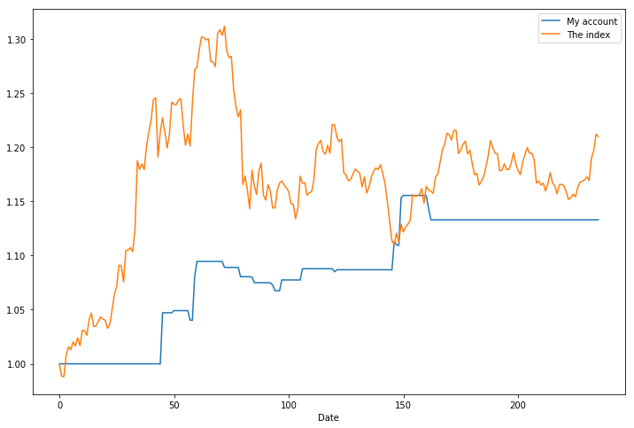
num = 0
for ts_code, buy_date, sell_date in zip(account.info['ts_code'], account.info['buy_date'], account.info['sell_date']):
Draw.Draw_Stock(ts_code, stock_info, buy_date, sell_date, left_offset=15, right_offset=15)
num = num + 1
if num > 20:
break
E:\code\venv2\lib\site-packages\matplotlib\pyplot.py:514: RuntimeWarning: More than 20 figures have been opened. Figures created through the pyplot interface (`matplotlib.pyplot.figure`) are retained until explicitly closed and may consume too much memory. (To control this warning, see the rcParam `figure.max_open_warning`).
max_open_warning, RuntimeWarning)
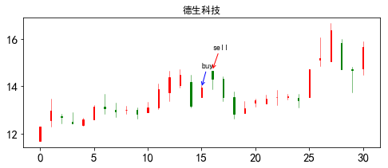
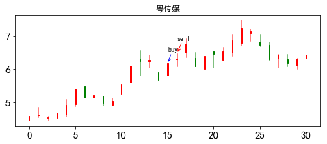
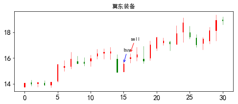
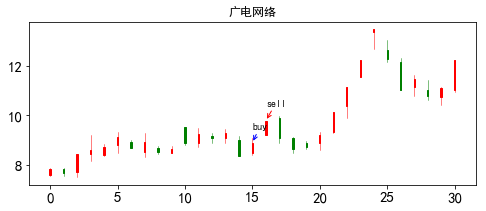
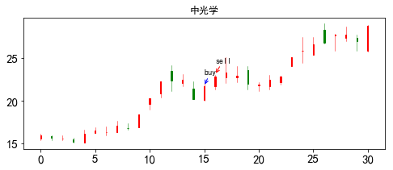
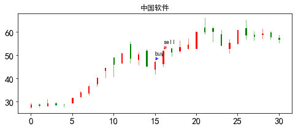
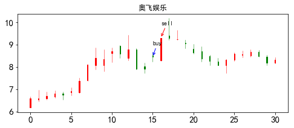
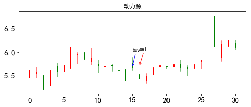
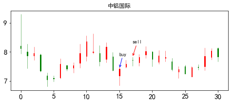
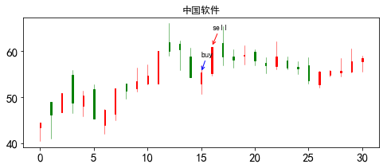
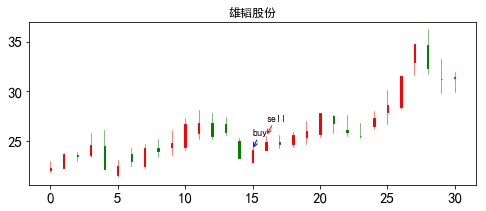
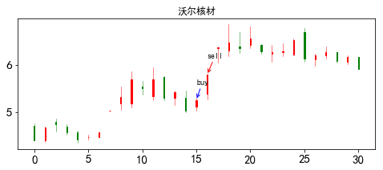
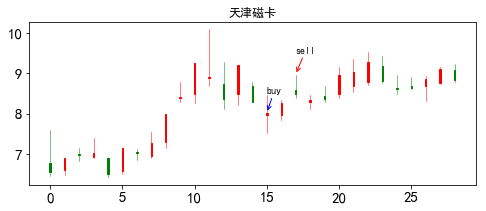
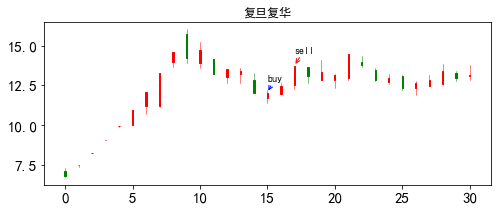
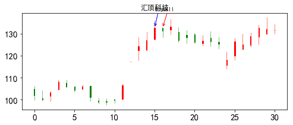
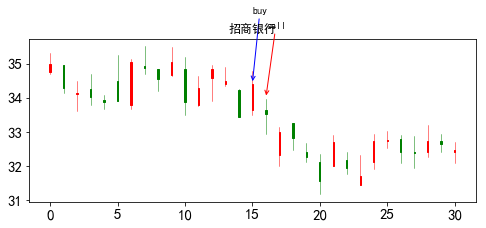
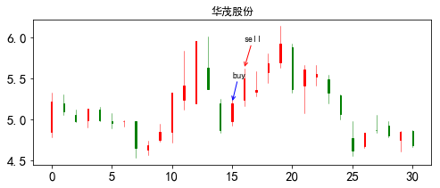
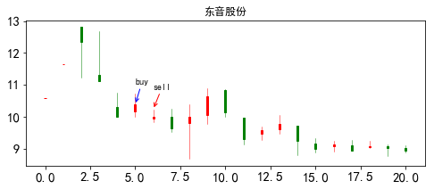
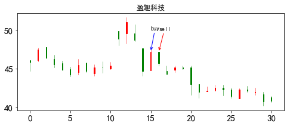
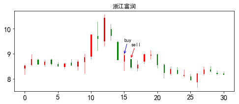
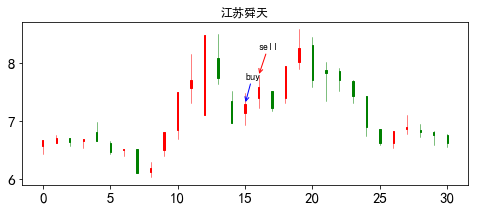